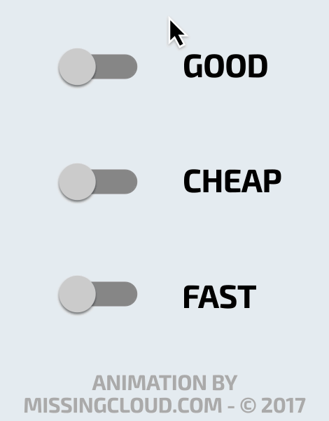

Taipei Co-Space
臺北創新實驗室
新創
網民入門相關教育訓練
- 你該懂得網路科技
「網站」
Created by
Chun
/
@江弘竣
- 2017/02/21
嗨，大家好
我是阿竣。（以下千字略）
（默）
新創之於內容(Value)，內容之於網站
為甚麼你要網站？
又為甚麼你不要網站？
網站要是平台、是購物、還是形象？
判斷夢想執行的順序
要請人還是外包？
C/P值連動

大家都用App，我要不要？
從0到60，WordPress 保證班
不完美的一次出擊，是調整自己的關鍵
流量分析
從哪裡來，在哪裡被嚇跑。
成效追蹤
轉換率規劃
再出發，這一次「不一樣」
網站改版
行為模式掌握，動線確定
能力升級
網站新增功能 / 自我學習成長